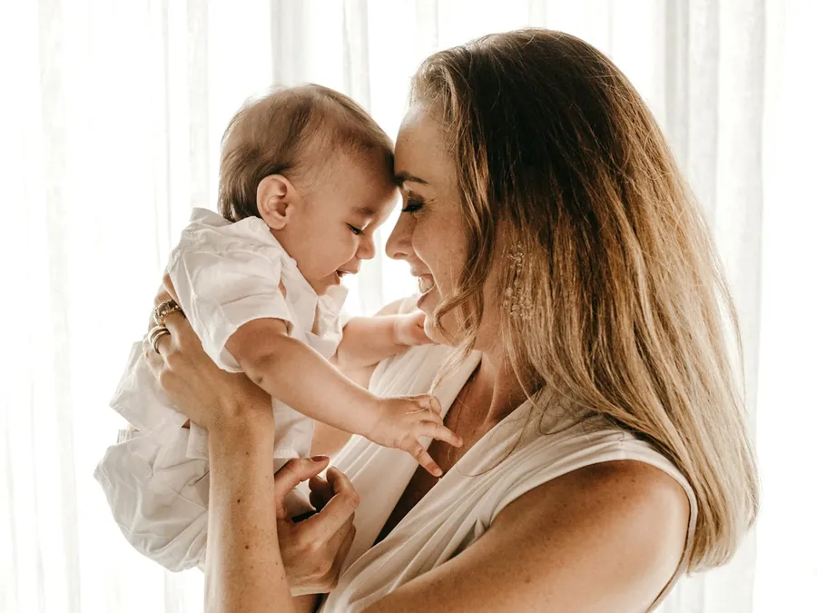

Before you get a quote
What the price
of plastic surgery in Colombia depends on
Surgery time, combined procedures, and what an honest quote should include, with no noon prices listed here.
You search "plastic surgery in Colombia cost" and every page gives you a different number. That's not a glitch: the price of plastic surgery in Colombia isn't fixed per procedure. It depends on how long the surgery takes, whether it's combined with another one, the type of anesthesia, and, most of all, what's actually included in the quote you're handed. noon Clinic doesn't list prices on its website, because that budget is built around your case, not the other way around.
What actually moves a quote
Price doesn't move at random. Operating room time is the biggest factor: a rhinoplasty runs 2 to 3 hours; a tummy tuck, 3 to 4. More surgery time means more anesthesia time and more of the medical team's time, and that's reflected in the budget.
Combining two procedures in one surgery, say liposuction with a tummy tuck, also changes the math, because it adds operating room time. That call isn't made by your calendar or by a video you saw online. It's made by the surgeon at your consultation, based on your health and your case: the CDC itself flags combining several procedures into one long surgery as a factor that raises risk, so it's never just a pricing question.
For implant-based surgeries, the size and type decided at your consultation also feed into the budget. None of this gets priced over WhatsApp without seeing you first. WhatsApp is for general information and scheduling, not a firm number.
What an honest quote should include
A quote that doesn't say what's in it isn't useful for comparing anything. An honest one lists, at minimum, the surgeon's fee, anesthesia, operating room use, pre-op exams, and post-op follow-up. If any of those is missing, ask. You may end up paying for it separately, or it may not be planned for at all.
The ASPS figure on US rhinoplasty cost is a good example of this: it's the surgeon's fee alone, no anesthesia, no operating room. It isn't the full cost of getting operated on in the US, which is exactly why lining it up against a bundled Colombian quote causes more confusion than clarity.
Why a price that's too low is also a red flag
Cheaper isn't always cheaper. A quote that's far below the others, with no clear explanation of what it leaves out, isn't just a budget question. It's one of the red flags of clinics cutting corners on pre-op exams or the operating room to show you a lower number first. The right price already has what your surgery needs built into it. Not one that surprises you with extra charges later.
How quoting works at noon
It starts with an in-person consultation in Medellin with the specialist for that area: they examine you, tell you whether you're a candidate, and what makes sense for your case. From there you get your plan in writing, with the procedure, timeline, aftercare, and budget. We don't give that figure before seeing you, because before your consultation we don't know it with certainty either.
If you live in Miami, Houston, New York, or any other US city, this also changes how you plan the trip itself: the surgery budget is one thing, and the days you'll spend in Colombia recovering are another, with their own flight and lodging costs.
What this means for your decision
We won't tell you that you'll save some exact amount by getting operated on in Colombia. That depends on your procedure, the city you're flying from, and what you decide to include. What we can tell you is what to ask before comparing two quotes: what each one covers, who signs off on the plan, and when you get it in writing.
If you already know which procedure you're interested in, book your in-person consultation and ask for an itemized budget, line by line. That's the only number that actually helps you decide.
Procedures in this guide
This guide is for information only and does not replace a medical consultation. Your specialist decides, in person, whether a procedure is right for you, your recovery time and when you can fly home. Every procedure carries risks and results vary from person to person.
Frequently asked questions
Frequently asked questions
Why can plastic surgery in Colombia cost less than in the US?
Costs vary widely between clinics and between countries, and there's no fixed number either side can promise upfront. What you can do is ask for an itemized quote and compare what each one includes, not just the final figure.
What should a plastic surgery quote in Colombia include?
A complete one lists the surgeon's fee, anesthesia, operating room use, pre-op exams, and follow-up visits. If any of those is missing, ask before you decide.
Can I get an exact price over WhatsApp?
No. WhatsApp is for general information and scheduling your consultation; a firm quote comes in writing after the specialist examines you in person.
Why should I be careful with a quote that's much lower than the others?
Because it may be leaving out pre-op exams, a licensed operating room, or follow-up care, exactly the things that protect your safety. Always check what's missing before choosing on price alone.
Does the price change if I combine two procedures in one surgery?
Yes. Combining procedures adds operating room and anesthesia time, and that decision is made by the surgeon at your consultation, based on your health and your case.
Is follow-up care after I'm back in the US an extra cost?
noon offers remote follow-up by WhatsApp or video call as part of the plan already agreed with you. That doesn't replace any in-person check-up your specialist schedules before you fly, or the in-person consultation itself.
Guides
Keep reading.

Mommy Makeover in Colombia, for US PatientsCombining breasts and abdomen into one surgery isn't a scheduling choice. It's your surgeon's call, and it changes how long you need away from home.ReadBy city
Flying in from your city.
noon Clinic
Let's plan your trip
Message us from the US and we'll set your consultation, procedure and follow-up dates with you.
We reply on WhatsApp within minutes during business hours. We answer your questions and book your in-person consultation; we never diagnose over WhatsApp. Why noon